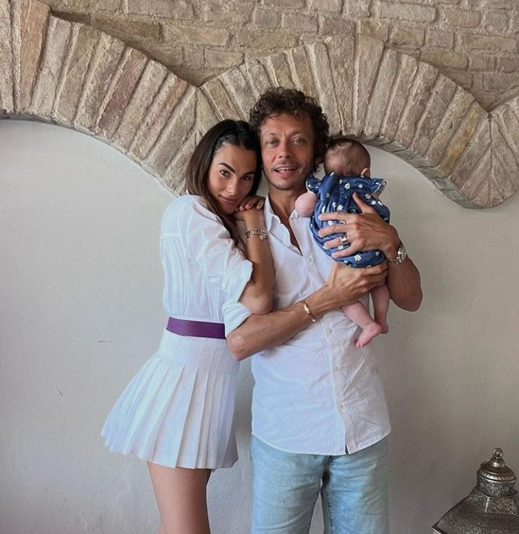

VALENTINO ROSSI
Valentino Rossi è uno dei più grandi fuoriclasse della storia del motociclismo.
Nella sua lunghissima carriera, durata più di 25 anni, Valentino ottiene il titolo di campione del mondo per 9 volte, di cui 5 consecutive (1997, 1999, 2001, 2002, 2003, 2004, 2005, 2008, 2009).
Oltre ad essere un fenomeno in pista, Rossi ha dimostrato di avere un'innata capacità di saper conquistare il pubblico, grazie ai suoi incredibili, imprevedibili ed indimenticabili modi di festeggiare ogni successo.
Conosciuto da tutti come "il Dottore" ("The Doctor"), il talento italiano, divenuto icona del mondo delle due ruote, ha conquistato e battuto numerosissimi record.
Ad accompagnarlo in queso percorso, che lo ha portato ad essere inserito nella MotoGP Hall of Fame, c'è sempre stato il suo inseparabile numero 46 (ad oggi ufficialmente ritirato dalle corse).
"Solo se vinci puoi permetterti di fare il deficiente." [Valentino Rossi]


Breve biografia
Nasce il 16 febbraio 1979 a Urbino, dal padre Graziano Rossi e dalla madre Stefania Palma.
Dopo la separazione dei suoi, ha avuto un fratellastro, Luca Marini (divenuto anche lui un pilota motociclistico) e una sorellastra, Clara.
Cresciuto a Tavullia, le sue prime esperienze agonistiche sono a quattro ruote.
Ma i costi per continuare a gareggiare con i go-kart sono troppo elevati, così decide di passare alle minimoto.
Da allora non ha fatto altro che alimentare incessantemente la propria leggenda, dimostrando di poter ancora competere al top anche oltre la soglia dei 40 anni.
La presenza di una star come Valentino ha da un lato avvicinato anche i tifosi generici, ma dall’altro ha ampliato enormemente il potenziale di tutto il sistema MotoGP.
Basti pensare che, nel corso del tempo, tanti bambini italiani e non si sono ispirati alle sue grandi gesta.
A tal proposito, Rossi ha iniziato a condividere i suoi allenamenti con gli altri piloti italiani, aprendo letteralmente le porte del suo Ranch e dando così vita alla celebre Academy, il cui primo allievo è stato proprio il compianto Marco Simoncelli, con il quale aveva una forte e sincera amicizia.
Il passo immediatamente successivo e naturale è stata la creazione del Team Sky VR46, impegnato nel motomondiale dal 2014.
Negli anni non ha comunque abbandonato le quattro ruote, per cui ha sempre avuto una grande passione.
Lo dimostrano la partecipazione a gare ufficiali di Rally ed i test con la Ferrari in Formula 1 nel 2006.
Nel suo incredibile palmares c’è anche una magnifica vittoria alla 8 Ore di Suzuka del 2001 in sella alla Honda VTR SP-W, insieme al suo compagno di squadra Colin Edwards.
Nel 2022 il pesarese ufficializza che parteciperà con WRT al GT World Challenge Europe, sia nell'Endurance sia nello Sprint, in equipaggio con Frédéric Vervisch e Nico Müller.
Il 31 maggio 2005 gli viene conferita la laurea magistrale honoris causa in "Comunicazione e Pubblicità per le Organizzazioni" dalla facoltà di Sociologia dell'Università di Urbino "Carlo Bo".
Nello stesso anno esce nelle librerie la sua autobiografia "Pensa se non ci avessi provato", scritta con il giornalista Enrico Borghi e pubblicata dalla Arnoldo Mondadori Editore.
Il 4 marzo 2022 diventa padre di una bambina, Giulietta, avuta dalla compagna Francesca Sofia Novello.